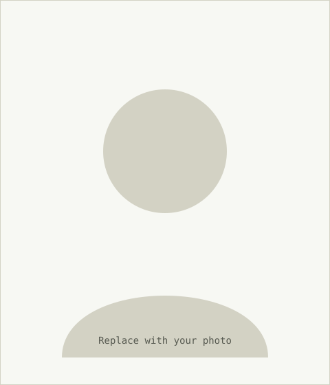

Brand Identity, Local Café
Logo, packaging, and a small style guide built in Illustrator so the client's team could keep it consistent after handoff.
I'm James — a Computer Science student and freelance creative designer. By day, code and logic; by night, brand systems, edits, and motion. This is where both sides of that work live.

I'm a BSCS student, currently in my second year, studying data structures, software fundamentals, and how systems are put together. Outside of class, I run a small freelance practice covering graphic design, branding, video editing, and motion graphics.
The two sides feed each other more than people expect. Debugging a program and refining a rough cut both come down to the same habit: look closely, find what's not working, and fix it without breaking everything else.
Logo, packaging, and a small style guide built in Illustrator so the client's team could keep it consistent after handoff.
60-second vertical edit cut in Premiere Pro, with motion titles built in After Effects for a social launch.
Static site built from scratch for a web development course — semantic HTML, hand-written CSS, no framework.
Ongoing design requests for freelance clients — social templates, simple decks, and quick brand refreshes in Canva and Figma.
More case studies are being written up as the freelance work gets documented properly — this section will keep growing.
Open to freelance design work and to hearing about internship or junior developer opportunities. Reach out directly through either of these.